This is an example of a riverside apartment complex in Kyoto with terraces that connect residents to create visibility among their own community. Hyggehäuser has since evolved into a concept beyond category or type.
This project has two layers. The first is spatial — a housing complex designed so that community can emerge naturally from daily life. The second is digital — a resident app that makes that community visible and discoverable, especially for someone who has just arrived and does not yet know anyone.
Everything on this page connects to one question: how do you design belonging?
- Location: Fushimi Ward, Kyoto, Japan
- Type: Graduation Project
- Disciplines: Architecture + UX Design
- Scale: Mixed-use residential complex
- Status: Academic proposal
The Challenge
There is something paradoxical about the idea of an apartment building. Apartment buildings take many individuals and place them atop one another – however, they offer little opportunity for interaction. A central figure in the initial stages of this project was an individual person, recently relocated (no regular routine, no neighbors, and therefore, no apparent way to interact). The goal of the project was not to force socialization but to make opportunities available for those interested in connecting when they are ready.
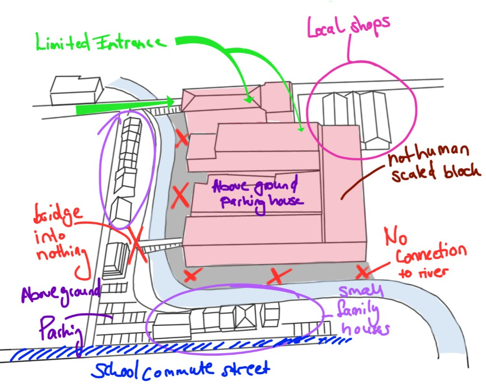
The site before — a monolithic block with no connection to river
Contextual Research — Understanding the Environment and Its Users
Before beginning to draw I mapped the site as a UX researcher would map a users environment — observing how people behave today and where unmet needs exist and are being overlooked.
Fushimi ward has all the elements of a well-connected neighborhood. A tranquil river, bike lanes, a grocery store with several smaller local stores surrounding it, a kindergarten (just a short walk), and generally quiet streets that would encourage walking or biking. The existing apartment block was in midst of all of these resources yet completely disregarded each of them.
I did not have a problem to solve in terms of creating something additional. I simply needed to remove what existed to allow access to the many resources already available.

Contextual research map — pedestrian flows, cyclist routes, existing amenities and social infrastructure. Before / after site analysis.
Research That Shaped the Thinking
Understanding what already works — and why
Design has to begin with understanding what has been successful in the past. And why. This doesn't mean simply copying the form. This means understanding the underlying logic of that design.
BIG — 79 & Park, Stockholm
Analyzing 79 & Park showed me that varying unit composition was never about aesthetics, it was always a social issue. In order for a building to stop making assumptions about its tenants (how many people will live there, what type of household it will be, etc.) and allow them to choose their own degree of privacy when outside their units, you need to vary the unit composition. The terrace block form creates a gradient of shared outdoor spaces at each level - from very private balconies to semi-public landings to completely public ground floors. A tenant can be as visible or as invisible as he/she wants on any given day.
The terrace-block form creates a gradient of outdoor space at every level — from deeply private balconies to semi-shared landings to fully communal ground floor areas. That gradient is the architecture of choice: residents can be as visible or as withdrawn as they want to be, on any given day.
"If all people are different, then why are most of the apartments the same?"
— Bjarke Ingels

79 & Park, Stockholm — BIG Architects. Terrace-block form and varied unit composition.
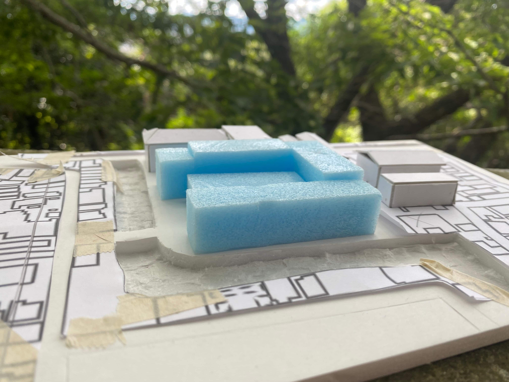
Site model, Fushimi Ward. The apartment-block that stands there originally
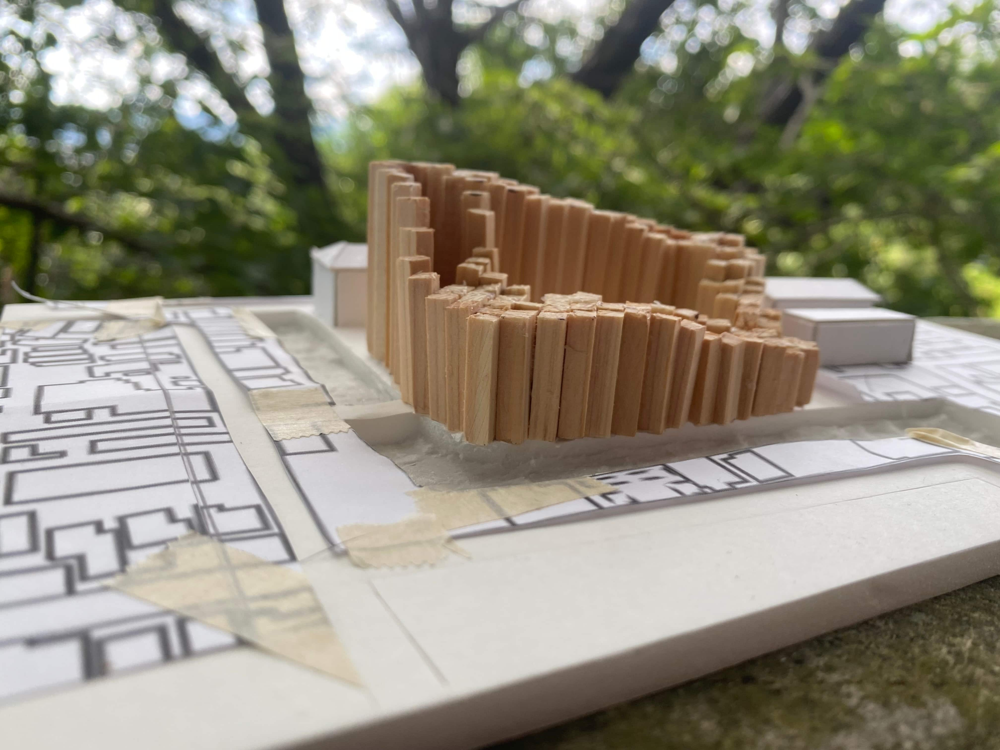
Height restriction study — 79&Park volume adapted to Kyoto zoning limits. The cut becomes the design.
Users & Design Goals
Spatial Concept
Eight shifts from isolation to community

Eight spatial shifts — from isolation to community. Concept diagram.
As a result of these Eight spatial decisions, the buildings were shifted away from being isolated and toward community.
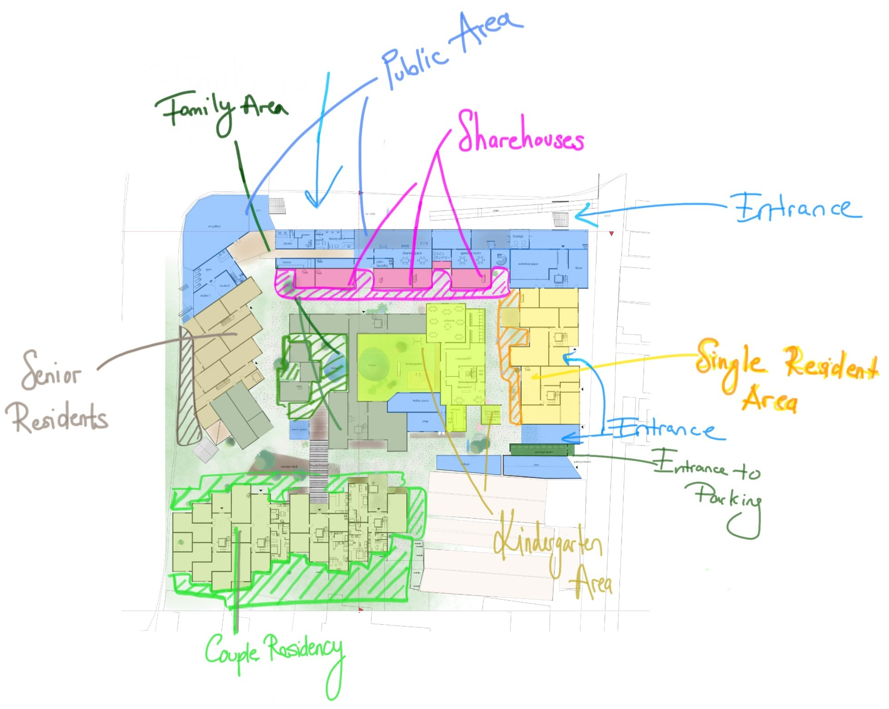
Resident zoning — families, singles, elderly, couples and share houses arranged around the shared courtyard. Click to enlarge.

Ground floor plan — kindergarten, café, shared spaces, workshop, lounge, and promenade connecting to the Hōkawa river. Hover to zoom.

Resident type zoning diagram
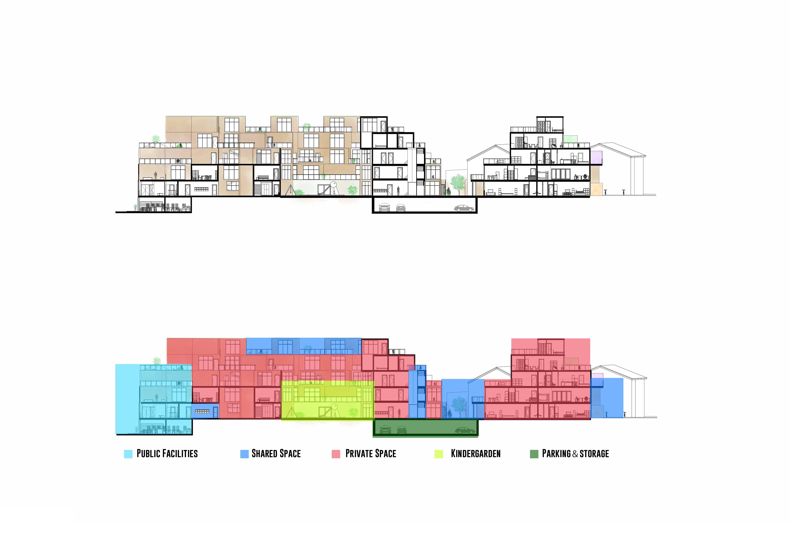
Section A-A' — terraces stepping toward the river. Hover to zoom · Click to enlarge.
Housing as a Small City
At its base is the premise that a residential building should act much like a small city. When all individual needs exist on-site, daily routines will change. Commuting to the local coffee shop is eliminated. Driving to the local gym is unnecessary. Activities typically spread throughout a city are integrated into the architecture itself — and the unplanned interactions which occur as a byproduct of those activities are not forced. Instead they are coincidental.
Instead of commuting to work, cycling to a café, driving to a gym, and then returning to an isolated apartment — the resident moves through a layered environment where those activities are woven into the architecture itself.
Conventional
Hyggehäuser
Therefore, the program incorporates private units next to shared courtyards and outdoor areas, a cafe, workshops and studios, a kindergarten, a fitness center, a weekly farmer's market, laundry facilities, a lounge and several event spaces. These are not mere amenities. Rather they represent social infrastructure merged into one site.
User Research — Validating the Hypothesis
To assess the validity of these spatial principles, I interviewed residents in informal settings with varying household compositions in Japan using the following three questions to guide our conversations: Did the opportunity to encounter your neighbors naturally in a public space create a positive desire to interact? What factors would increase usage of shared spaces? What features would a resident-app need to encourage users to check it every day?
"I don't need to talk to neighbours — but I'd love a shared space where I could invite friends to hang out or play games."
— Research participant, early 20s, Kyoto
"Feeling obligated just because someone lives next door feels like too much — but if there were spots where you could naturally encounter people and strike up a conversation, it would feel less forced."
— Research participant, couple, mid 30s, Kyoto
"Seasonal events feel right. But what I'd really use every day is a personal work space or gym — somewhere just for me."
— Research participant, late 30s, Kyoto
Each of the three interviewees did not wish to have mandatory community. Each wished some form of improved infrastructure supporting their own lives - in this case, spaces that become social based on their desires to connect. Thus, the fundamental philosophy that guides the design of Hyggehäuser was reaffirmed — design the conditions under which social connections may develop, but never force them.
User Experience in Space
Floorplans are insufficient for analyzing. Instead, what is important is understanding the sequence of experiences that a resident actually goes through: entering their apartment, walking past a shared courtyard/terrace, observing activity occurring in any common area, choosing to engage with others/stop.
Spatial journey — from private to shared
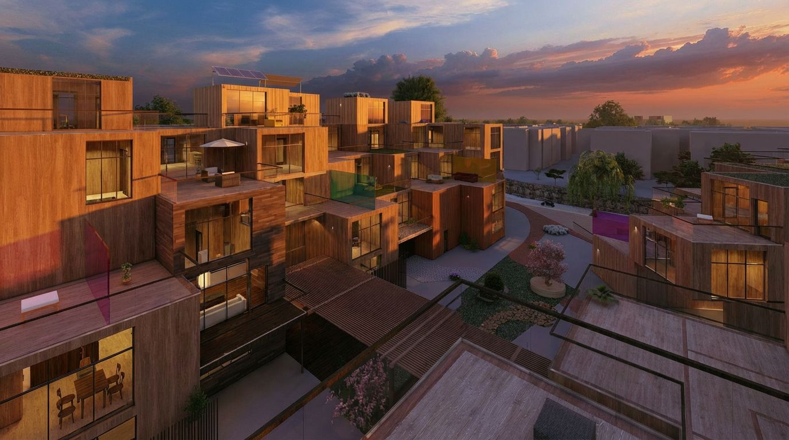
Shared terraces at golden hour — the building at the moment it becomes a place
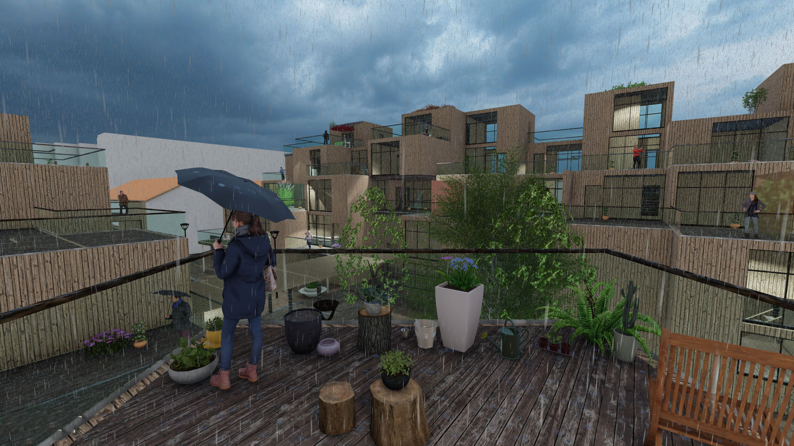
A rainy afternoon on the shared terrace — the building works in all weather, not just the golden hour
Extending the Experience Through Digital Interaction
This building complex supports the development of a community. For someone new to the area (or simply new to the building complex) there may be little sense of belonging until they see others around them. Each item on this page relates to an essential question: How do we build connections and develop a sense of belonging?
Concept & Features
There are many insights in the Hyggehäuser platform. One major insight is that the most difficult time for new residents is to get started. Once new residents move-in to Hyggehäuser they do not yet understand where things are located in relation to their new home, nor do they know what is available for them (events, services). And therefore, also not knowing who might be living near them. This is exactly what the app helps resolve — making the shared building transparent before any new resident has had even one conversation with another resident.
User Journey
A new resident arrives with no social connections. The app becomes their first interface with the community — before they have met a single neighbour.
End-to-end user journey — from arrival to belonging
Wireframes
The first version of the app was wrong.
In early concept iterations we explored ways to promote engagement, such as notification banners indicating that your neighbor had checked-in to the app or creating a list of your immediate neighbors that you could view and contact. However, user-research quickly removed both ideas. As part of our discussions all three participants identified obligation as the primary reason why encountering your neighbors in a public space felt awkward and uncomfortable.
Consequently, the platform took on a subtler logic. Community is visible when you choose to look for it. The app displays information regarding events and activity only after the user actively chooses to open the app. Therefore, no notifications were implemented to alert users of impending events. No prompts were used to encourage users to introduce themselves upon opening the app. No ambient pressure was exerted upon users to continue interacting with their neighbors via the app.
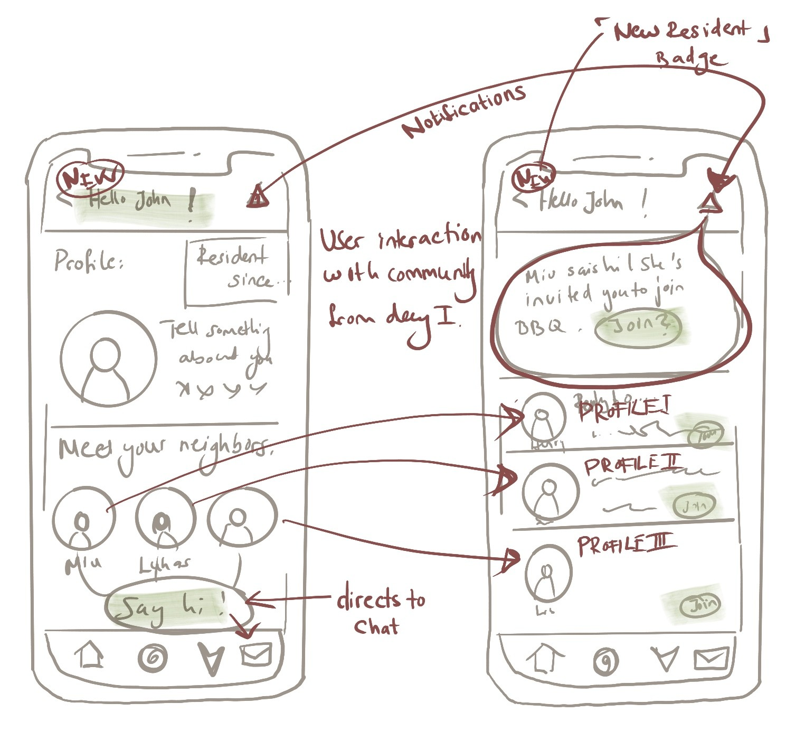
The first concept forced social interaction from day one — notification banners, neighbour lists, a prompt to introduce yourself on arrival. User research pushed back immediately: residents didn't want to announce themselves. They wanted to discover community at their own pace.
Final Wireframes
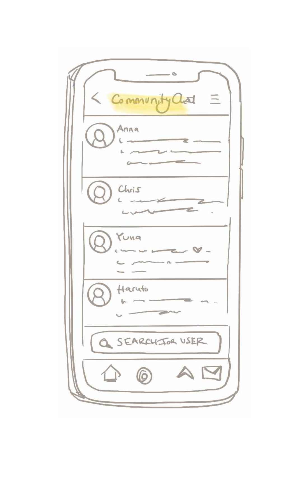
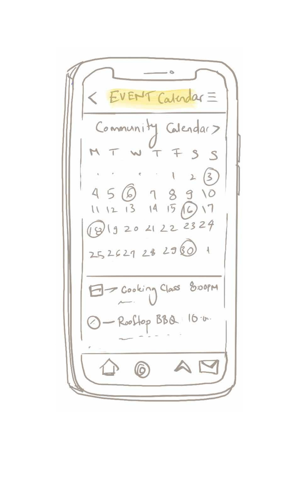
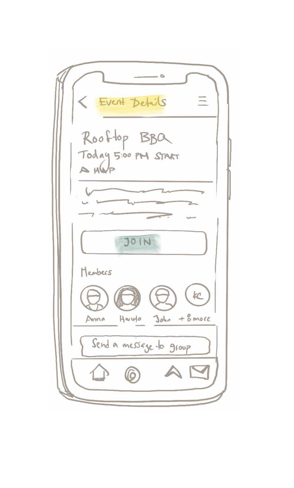
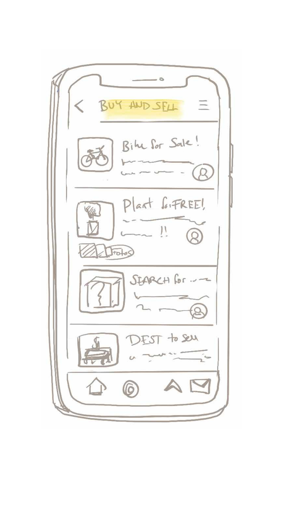
Developed concept — digital
Resident app concept — event discovery, space booking, and community profiles.
Design Vision
Prior to drawing the first section of drawings for Hyggehäuser, the question asked was: what does it feel like to live here? Where do children play? And where does someone go when they wish to be alone?
The illustration shown below is representative of my first visual representation of Hyggehäuser, created prior to drafting any floorplan. A family enjoying a courtyard with water and trees. Couples and individuals alike enjoying a shared space. This illustration served as a promise about what Hyggehäuser was intended to provide.

Early design vision sketch. Families, children, and residents sharing the courtyard. Drawn before any floor plan.
Process
The project evolved through physical model studies, sketch iterations, and scenario-based problem solving. Each cycle tested how people move, meet, and pause in the building.
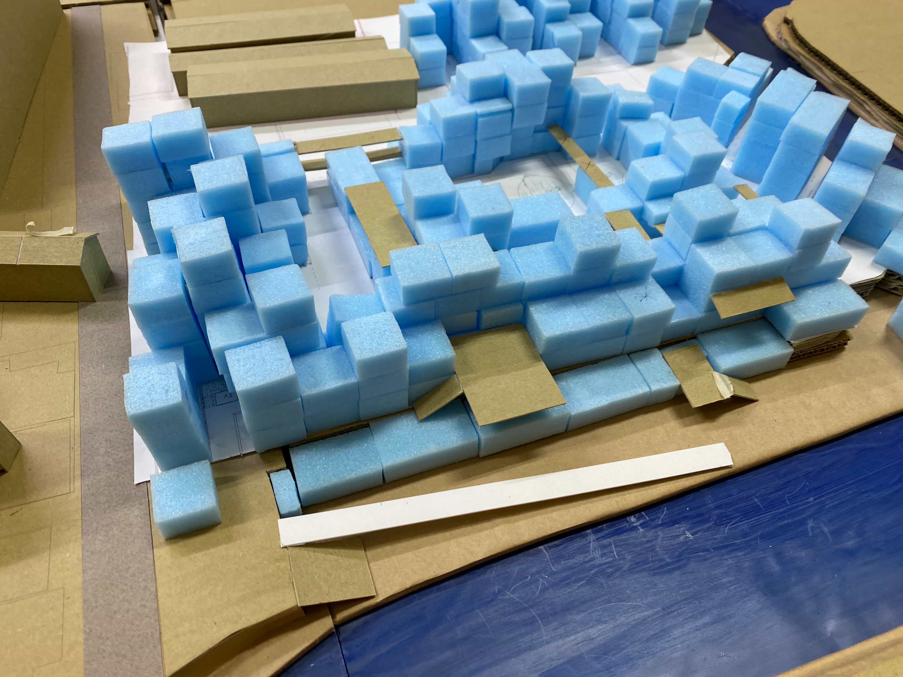
Exploring modular unit layouts and terrace configurations

Testing visibility and privacy gradients between units

Physical model — river edge relationships and fishing deck connection to the Hōkawa waterfront
Outcome
Hyggehäuser lies at the junction of two disciplines that infrequently communicate with one another. The building provides a form for community. The platform provides means for discovering that community. Without either element functioning appropriately together neither is successful.
Reflection
My experience working on this project fundamentally changed how I approach design - in a revolutionary manner. I began exploring spatially-based questions: how do you design a community? I concluded by asking interaction-design questions: What does a user see when they open the app? Where do they get stuck? What brings them back? Ultimately, I found that both disciplines represented the same issue merely presented in different mediums.
The ultimate goal of Hyggehäuser is to provide cooperative housing, a model where potential future residents will be able to contribute to developing an environment they will ultimately inhabit. While cooperative housing is formally established in Denmark as a viable option; cooperative housing remains relatively rare in Japan. Thus, bringing this model to Fushimi-ward is what this project seeks to facilitate.
If you can enable residents to participate in shaping their physical environment, then why cannot you also enable participation in shaping their digital environment?